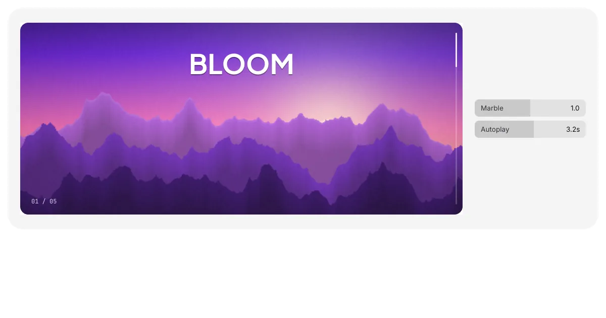

Marble Scroll
A scroll story of full-bleed pictures whose seams tear and melt into marbling as they cross the view, strongest when scrolling fast.

Usage
Add glowkit next to eframe:
cargo add glowkit eframeThen draw it inside any egui Ui:
use glowkit::prelude::*;
use glowkit::interactions::MarbleScroll;
// owns its viewport (wheel / drag / autoplay)
ui.add(MarbleScroll::new().titles(["Bloom", "Drift", "Thaw", "Glow", "Still"]).marble(1.0));
// or follow a ScrollArea: MarbleScroll::new().linked(true), or drive it: .progress(p)Prefer to own the code? The glowkit CLI copies this component's source into your project, shadcn-style:
cargo install glowkit-cli
glowkit add snap-marble-scrollEquivalent to
If you know this pattern from Snapblocks, Marble Scroll is the Rust version: an original egui implementation, not a port, that runs natively and in WebAssembly.
- Marble ScrollSnapblocks
About Marble Scroll
Marble Scroll is one of 46 components in glowkit's Motion & Layout category. It lives in the glowkit-interactions crate, enabled by the interactions feature of glowkit (on by default). It reads its colors from the active glowkit theme, so it matches the rest of your app in light, dark or a custom brand theme, and every color, size and timing has a setter to override it.
Layout pieces that move: a magnifying dock, marquees, animated lists, card stacks and swaps, carousels and coverflow, expandable cards, masonry, parallax heroes, sticky scroll reveals and animated beams between elements.